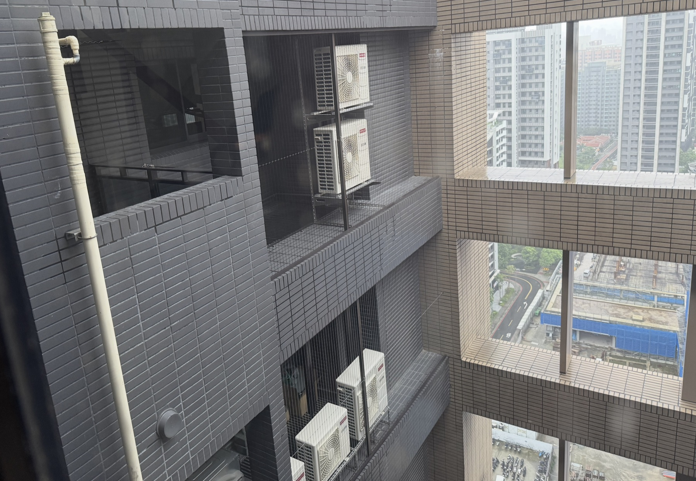
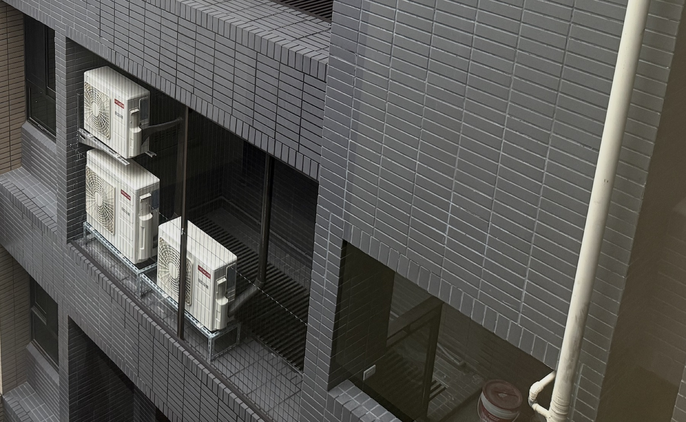
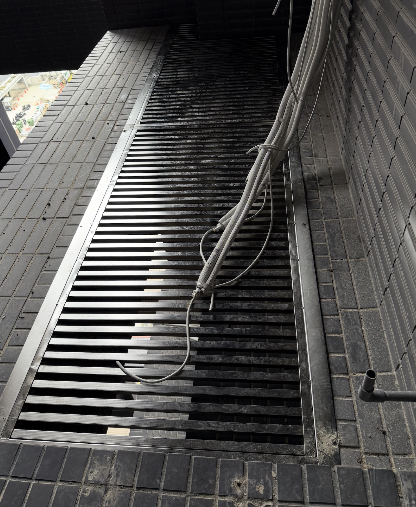
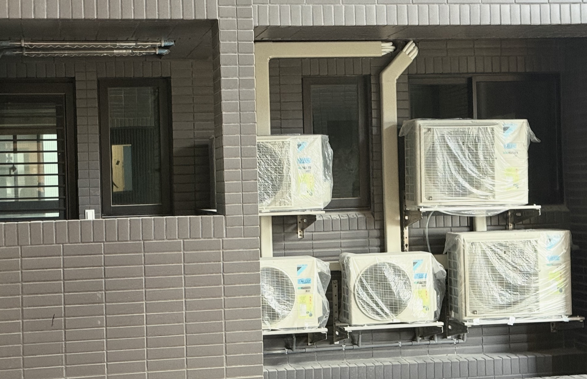

法規適用範圍與待確認事項
天井若在使用執照或竣工圖上屬垂直挑空，增設水平格柵可能涉及變更或違規增建。透空、可拆卸或稱為「檢修貓道」均不當然取得合法性，應先由建築師比對原核准圖說，必要時向主管機關確認。
依《公寓大廈管理條例》第 8 條第 2 項，住戶有 12 歲以下兒童或 65 歲以上長者時，得在不妨礙逃生且不突出外牆面的前提下設置防墜設施；個案仍須符合社區規約及主管機關要求。
社區既有施作戶應逐戶建立位置、照片、核准文件與安全狀況清冊；既有事實不等同合法或當然免除改善義務。新案的退縮、配色與管槽要求，應經社區合法程序採納後執行。
現場既有施作樣態詳細對比矩陣（樣態 A vs 樣態 B 深度剖析）
大樓最外緣由上至下貫穿的是「建築外樑（RC 主結構承重深樑）」，其外緣即為法定建築滴水線；而「陽台女兒牆」則是後陽台地坪邊緣之防護矮牆。兩者之間所夾的垂直開口即為「小天井（法定挑空）」。樣態 A 係立於外樑內側凹槽，隱形鐵窗封設於外樑開口立面；住戶需跨過內側女兒牆或檢修口方能到達。
| 評估維度 | 樣態 A：外樑立式雙層架＋全面隱形鐵窗（實例：3樓） | 樣態 B：壁掛式多機排列＋專用修飾管槽（最新實例） |
|---|---|---|
| 結構空間配置 | 主機靠置於外深樑內側凹槽右側，上下雙層立架；隱形鋼索網緊貼外樑內側垂直全面封設。 | 主機橫向密集壁掛於後陽台內側 RC 實體牆面；配管以專用耐候管槽集中收納。 |
| 外樑 vs 女兒牆關係 | 主機承載於外樑凹槽側，內側為陽台女兒牆。女兒牆與外樑間跨距即為小天井，需藉由格柵踏板維修。 | 主機掛於女兒牆後方之陽台實體主牆。但前方面臨同樣的小天井挑空與外樑空間。 |
| 小天井水溝蓋安全問題 （核心交集） |
若經確認得設置，承載、扣件、防滑與防落措施應由專業人員依跨距及使用情境計算；200 kg 集中載重與 5～10 mm 細目網暫列社區提案值。 | 若住戶加裝格柵，仍應接受相同類型的合法性與安全風險檢核；實際結構規格依位置、跨距與專業計算決定。 |
| 建築立面整齊度 | ★★★★★ 極高。上下樓層位置垂直對齊，由中庭仰望具高度建築秩序美感。 | ★★★☆☆ 中等。機台數量多（4~5台）時立面密度高，若管槽未收齊易顯繁雜。 |
| 採光通風衝擊 | 較少遮蔽陽台主要開口；實際採光、排熱與對流仍須依機型及現場量測確認。 | 部分主機遮蔽後陽台通風窗超過 1/3，易造成局部排熱回風及採光受損。 |
| 維修便利與職安 | 鋼索若死封，技師伸手角度受限；必須配合本規範增設「快拆檢修活動框」。 | 技師可雙腳站立於陽台實體樓板內檢修內側機型，但外側機型仍須依賴天井防墜措施。 |
本報告技術條文、尺寸與圖說之「現場照片直接取樣依據」完整對照清單
本報告依據現場實勘影像，從建築立面、室外機配置、小天井格柵及冷媒管線收納四個視角交叉檢視，並將可辨識的施工樣態對照後續技術規範與施工圖說。照片僅作為現況紀錄與審議參考，實際尺寸、材質及承載性能仍應以現場量測、結構計算與合格證明文件為準。

現況全景｜中庭立面與垂直配置關係
呈現上下樓層外樑、女兒牆、小天井與室外機架的相對位置，供檢視立面退縮、垂直軸線及維修動線。

樣態 A｜外樑凹槽雙層立架
可辨識雙層機架、防墜鋼索與格柵踏面配置，適合作為立面一致性及檢修空間的對照案例。

細部近照｜小天井格柵與管線
格柵開孔、邊框固定及跨越踏面的冷媒管線清楚可見，可供後續檢查防滑、防翻與防掉落措施。

樣態 B｜壁掛多機排列與修飾管槽
呈現多台室外機、壁掛支架及集中管槽配置，供比較機組密度、窗面遮蔽、排熱條件與外觀整理效果。
- ✔ 採納優點： 消光黑烤漆與二丁掛磚融合：現場格柵色系與磁磚完全搭襯，本報告第二章第十條、第四章材料表據此定調社區標準色為消光深黑（RAL 9005），維持外觀質感。
- ✔ 採納優點： 條狀開孔比例尚待量測：照片可見開孔均勻，但水平天井格柵不宜直接套用垂直裝飾構造物的 2/3 透空規定；採光、排氣及合法性均應另行確認。
- ✘ 待改善風險： 空隙直通天井、未見防落細網：小型工具或零件可能穿過格柵墜落並造成人員或設備損害，建議由專業人員設計相容的防落措施。
- ✘ 糾正結構風險： 踏面光滑、固定方式待確認：遇水可能滑倒，端部也需檢核翻覆風險；防滑、扣件及承載值應由結構專業人員確認。
- ✔ 採納優點： 外樑結構界限與退縮基準：照片中外樑深樑貫穿全棟，主機置於凹槽內。圖一 FX-SEC-01 暫以外樑外緣作為管制參考，退縮 15～30 cm 為社區提案值，須經現場測量及專業確認。
- ✔ 採納優點： 垂直軸線較整齊：上下樓層皆靠右側雙層排列，可作為外觀討論的現況案例；是否合規仍須依原核准圖說及個案審查判定。
- ✔ 採納優點： 隱形鐵窗貼近樑內側：照片可供檢視鋼索間距與外牆界限；是否符合第 8 條第 2 項仍須確認住戶資格、不妨礙逃生及不突出外牆等條件。
- ⚠ 補強維修機制： 全窗封設可能影響維修：照片中鋼索垂直貫穿全高，日後補冷媒或拆零件可能受限。圖四 FX-DTL-04 提議設置快拆檢修框，60×80 cm 為暫定尺寸，並須確認不妨礙逃生。
後陽台設施裝修管理辦法（草案）
經社區合法程序採納後施行；如依法須申請許可或備查，應完成後始得施工
適用於後陽台空調室外機、管槽、防墜設施及天井檢修格柵。涉及共用部分或外牆者，不因住戶同意或本辦法而免除法定程序。
住戶應提交位置及尺寸圖、材料規格、承攬廠商資料、維修動線、施工期程、現況照片，以及與使用執照或竣工圖說的比對資料。
天井、外牆、結構錨定或逃生動線有變動時，應由建築師及結構、消防等適任專業人員審查；有疑義時先洽主管機關。
退縮 15～30 cm、200 kg 集中載重、5～10 mm 防落網及 60×80 cm 檢修框均為社區提案值，須經現場量測及專業確認後定案。
施工期間應設防墜及防落措施，遵守核准時段，不得損傷結構、外牆、防水與消防設備；廢料及工具不得任意置於格柵或挑空邊緣。
提交完工照片、材料證明、固定及防水紀錄；防墜鋼線間距不得大於 10 cm，抗拉強度應大於 140 kgf，並依核定圖說逐項查驗。
既有戶逐案清查核准文件、結構安全、外觀與逃生條件。完成清冊不代表合法認定；必要時仍應改善或補辦程序。
不符合核定內容者，依正式通過的社區規約通知限期改善；保證金扣留或返還須依明確標準與程序辦理，不取代主管機關裁處。
工程圖說與施工剖面節點詳圖（SVG 向量圖）
具備標準工程尺寸引線、材質填充剖面與管制界限之高解析度向量圖
工程材料規格清單與驗退點檢表
社區提案規格與驗收檢核表（最終數值待專業確認及正式採納）
| 設施類別 | 關鍵構件 | 標準材料與技術規範 | 外觀色彩標準 | 安全承重與防護性能 |
|---|---|---|---|---|
| 冷氣室外機 | 安裝固定支架 | 雙層角鋼立架或厚度 3.0mm 以上 SUS304 三角架 | 熱浸鍍鋅原色 / 消光黑烤漆 | 附抗震橡膠減震墊，固定錨栓具抗拉拔認證。 |
| 冷媒管修飾槽 | 專用耐候抗 UV 硬質 PVC 裝飾管槽盒 | 消光深灰 / 黑色（配合丁掛磚） | 全程無縫密合收納，穿牆預留孔以矽利康填實。 | |
| 遮蔽百葉格柵 | 粉體塗裝鋁合金或烤漆不銹鋼格柵 | 消光黑（RAL 9005）大樓指定色 | 垂直裝飾格柵提案淨透空率 ≧ 67%；散熱效能仍依機型確認。 | |
| 天井鋼格板 (檢修水溝蓋) |
承重鋼格柵 | 熱浸鍍鋅齒化格板；扁鋼 32×5mm 為社區提案規格 | 熱浸鍍鋅原色 / 消光黑漆 | 提案單點集中載重 200 kg；實際值須經結構計算，踏面採防滑處理。 |
| 邊框托架與扣件 | L 50×50×5mm 鍍鋅角鋼；馬鞍夾對鎖扣件 | SUS304 / 鍍鋅防腐處理 | M10 化學錨栓植深 ≧ 50 mm，對角 4 點機械固定。 | |
| 底層防落細目網 | SUS304 不銹鋼擴張網（孔徑 5～10mm） | 不銹鋼原色 | 強制滿鋪加焊，阻擋手工具、螺帽垂直墜落。 | |
| 隱形鐵窗 (防墜網) |
防墜鋼索與軌道 | 直徑 1.5~2.0mm SUS316 包膜鋼絲；鋁軌底座 | 鋁軌消光深灰/黑；鋼索透明 | 鋼線抗拉強度應大於 140 kgf，間距不得大於 10 cm。 |
| 檢修與逃生機制 | 配發專用逃生電工剪；冷氣操作面設快拆框 | 與主軌道同色 | 應配置可快速解除或剪斷機制，不得妨礙逃生；檢修方式由專業人員確認。 |
後陽台裝修完工實地驗退點檢表（物業與管委會使用）
點擊勾選各項檢查項目，系統將動態計算合規指標
住戶施工切結暨責任約定書（社區草案）
供責任告知與施工管理使用；不構成法定免責或合法性認定
央北鳳翔社區 後陽台設施裝修安全與法規切結書
本草案經社區合法程序採納後，始作為裝修申請附件使用
立切結書人（區分所有權人）：____________________（以下簡稱甲方）
承攬裝修工程廠商：____________________（負責人：____________，以下簡稱乙方）
專有部分門牌地址：新北市新店區央北鳳翔社區 ______ 棟 ______ 樓之 ______
茲就甲方於後陽台進行冷氣室外機裝設、小天井檢修格柵及防墜設施工程，甲乙雙方同意遵守經社區正式採納之管理辦法與個案核定內容；本約定不取代法定許可或主管機關認定：
- 法令認知與配合改善：甲乙雙方知悉天井、外牆或共用部分的施作可能涉及法定許可。若主管機關要求改善、拆除或回復原狀，甲方應配合辦理並依契約及法律負擔相關費用；本約定不影響主管機關認定及各方依法應負的責任。
- 施工安全與防掉落：乙方應依核定圖說、結構計算及現場條件施工，落實防滑、防翻與防落措施。若因施工或維護造成損害，甲乙雙方應依契約及法律負擔相應的損害賠償責任；行政或刑事責任由主管機關或司法機關依法認定。
- 外觀一致性與外牆防水保護：甲乙雙方承諾冷氣室外機裝設位置、配管修飾管槽顏色（消光深灰/深黑色）、隱形鐵窗界限均完全遵守管委會公告之退縮與立面規範，絕不加設突出建築線之違規雨遮。外牆所有錨栓鑽孔點均已確實填注抗 UV 耐候型矽利康防水膠，若日後因本工程施作導致外牆滲漏水或磁磚受損，甲方願自費負責全面修復完好。
- 裝修保證金退還前置要件：本工程完工後，甲方應主動通報物業服務中心進行實地複驗。經物業與管委會指派人員依規範逐項點檢合格並於查驗表簽署確認後，始得無息領回裝修保證金。若查驗不合格且經通知限期改善仍未履行者，甲方同意管委會得依社區裝潢管理規定扣處違約金並暫緩退款，絕無異議。
立切結書人（區分所有權人/甲方）：
簽名蓋章：____________________________
身分證字號：__________________________
聯絡電話：____________________________
承攬工程廠商（乙方）：
公司發票章及負責人印章：________________
統一編號：____________________________
負責人聯絡電話：______________________